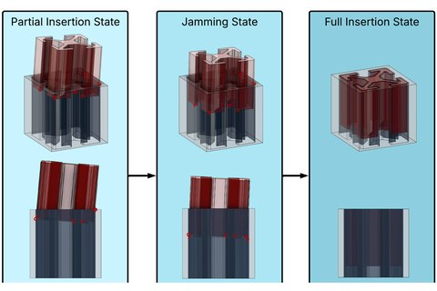
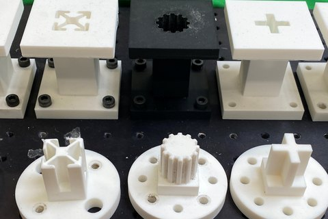
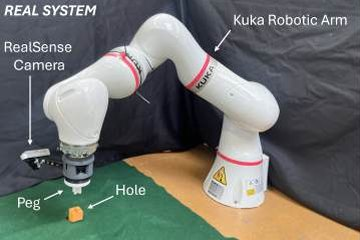

University of Tsukuba
Ph.D. in Engineering, Intelligent and Mechanical Interaction Systems
Ph.D. in Engineering, Intelligent and Mechanical Interaction Systems
Apr 2026 – present
Dhanush Penmetsa
I'm a PhD student at the CNRS-AIST Joint Robotics Laboratory (JRL) in Japan, where I'm advised by Prof. Fumio Kanehiro and Dr. Iori Kumagai. I'm supported by the MEXT Scholarship and the JST SPRING Fellowship.
Before this, I did my MS in Electrical Engineering at the University of Southern California, where I worked with Prof. Satyandra K. Gupta on pose estimation for the robotic assembly of complex parts. I did my undergrad in Electronics and Communication Engineering at Manipal Institute of Technology.
I'm happy to collaborate, so feel free to reach out by email.
Currently, I'm working on combining model-based methods with scalable robot learning methods.
Previously, I worked on pose estimation for the robotic assembly of complex parts from proprioception alone, combining contact-manifold registration with deep learning.

Estimating the pose of a part relative to its hole from contact information alone, for safe insertion of complex geometries with tight clearances.

Estimating peg–hole pose by matching contacts from simple probing motions to a precomputed contact manifold, using a learned projection network.

Vision-based pose estimation followed by compliant, impedance-controlled insertion, for robotic assembly tasks in space.
Reviewer: ICRA 2027
Reviewer: ICRA 2026
Reviewer: ICRA 2024 3D Manipulation Workshop
Reviewer: ICRA 2024 Agile Robotics Workshop